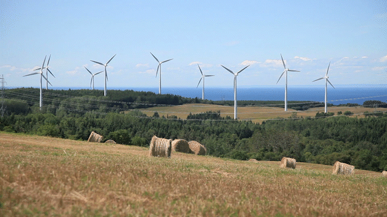
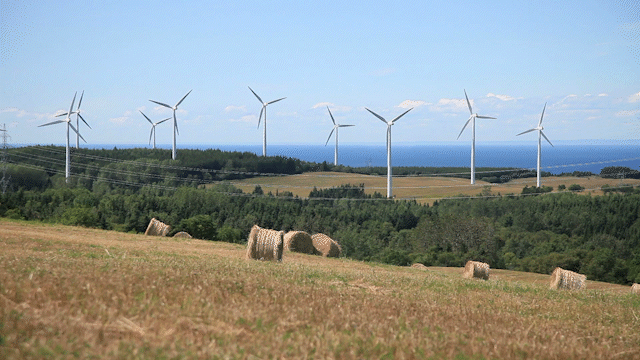
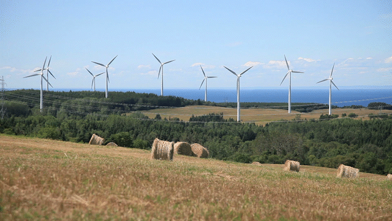

Za prvu vježbu imali smo zadatak napraviti vlastiti font u programu Fontographer ili FontForge.
Crtali smo Bezierove krivulje definirane s 4 točke u koordinatnom sustavu.
Opcijom blend dobili smo prirodan prijelaz između dvije krivulje i napravili masku pomoću krivulja našeg i nekog drugog fonta.
U trećoj vježbi u programu Ilustrator crtala sam cvijeće pomoću predložaka,
a za odabrani cvijet trebala sam napravit i uzorak za pozadinu.
Pomoću krivulja nacrtala sam vinsku čašu i krišku naranče, isto tako i zdjelu s juhom.
Različitim vrstama gradijenta postignuti su efekti odsjaja i prijelaza boje.
Za prvi projektni zadatak radili smo i dalje vektorsku grafiku u programu Ilustrator.
Cilj je bio precrtati sve elemente s predloška te uz pomoć raznih alata unijeti dinamiku u sliku.
Napravila sam i novi font koji mi je više odgovarao temi slike nego moj font iz prve vježbe.
Vježbe iz piksel grafike započeli smo retuširanjem slika. Obrisala sam malene „nepravilnosti" poput pjegica i prištića.
Lijevoj djevojci sam dodala još kose kopirajući njenu, a desnoj obrisala pokoju dlaku koja je „letjela" i dodala rumenilo.
Crno bijelu sliku dječaka sam obojala u neke boje koje su odgovarale njegovoj majici i pozadini. ž
Za razliku od slike dječaka zadatak za sliku na kojoj sam ja je bio kreativniji,
obojala sam svoju kosu, majicu, kožu, pozadinu i majonezu u razne boje. Svih šest slika smo uklopili u jednu.
U fotomontažu smo trebali uklopiti elemente zadane u zadatku i nekoliko svojih slika.
Najveća prepreka su bile sjene i kako sunce pada na određene dijelove slike. Kasnije sam uočila neke greške kod sjena koje su mi promakle.
Projektni zadatak 2 odnosio se na piksel grafiku, specifično fotomontažu. Nakon popravljanja nedostataka u pozadini počela sam stvarati scenu.
Uz elemente predložene uz zadatak dodala sam sliku sebe, svog psa i krave. Cilj mi je bio napraviti scenu naše šetnje s mnoštvom životinja.
Za kinemagraf je prvi zadatak bio video svijeća, a za vlastiti kinemagraf odabrala sam vjetrenjače.
Trebala sam samo pronaći video gdje im se ne preklapaju krila da je lakše napraviti nevidljivi rez.

Video uradak kojeg smo trebali napraviti bio je jednostavan ali efektan.
Za vlastiti sam odabrala temu Božića pa sam iskoristila snimke gradova s nekim klasičnim elementima adventa, sajam, klizanje i lampice na ulicama.
Posljednji zadatak ovog semestra jest izrada vlastite web stranice. Stranicu sam posvetila svom psu, Lotti.
Ubacila sam slike, video Lotte s lopticom, zvuk njenog laveža i neke informacije o njenoj pasmini odnosno polovici koju čini samojed.